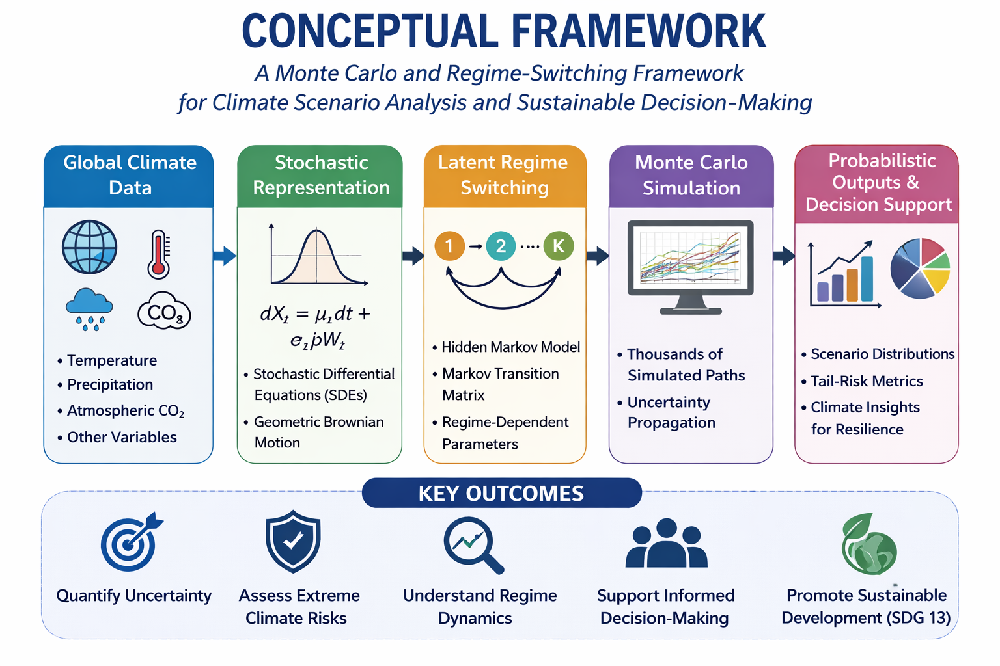

How It Works
Climate Futures combines historical climate observations with modern statistical techniques through the following steps:
- Collection of global climate data.
- Data cleaning and preprocessing.
- Detection of hidden climate regimes using Hidden Markov Models.
- Climate dynamics modeled using Regime-Switching Geometric Brownian Motion.
- Generation of thousands of future climate scenarios using Monte Carlo simulation.
- Analysis of uncertainty, risk, and climate variability.
- Production of decision-support information for sustainable planning.
